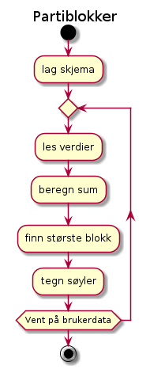
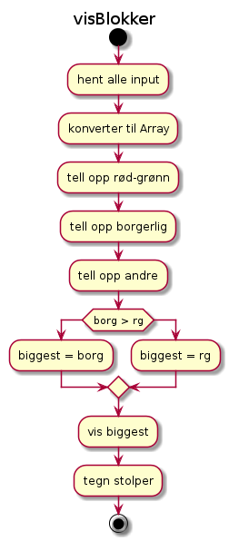

Flyt-diagram
Flyt-diagram for hele appen

Flyt-diagram for visBlokker

Testplan
- Sjekk at en bare kan skrive inn prosenter mellom 0 og 100
Koden mangler sjekker foreløpig
- Sjekk at koden summerer riktig for hver blokk
Manuell sjekk viser at det stemmer
Resultat av automatiske tester vises under.
- Sjekk at melding endres når største blokk endres (fra borgerlig til rød-grønn)
Manuell test viser at det er i orden
Test funksjoner i blokker.js
Test-resultat